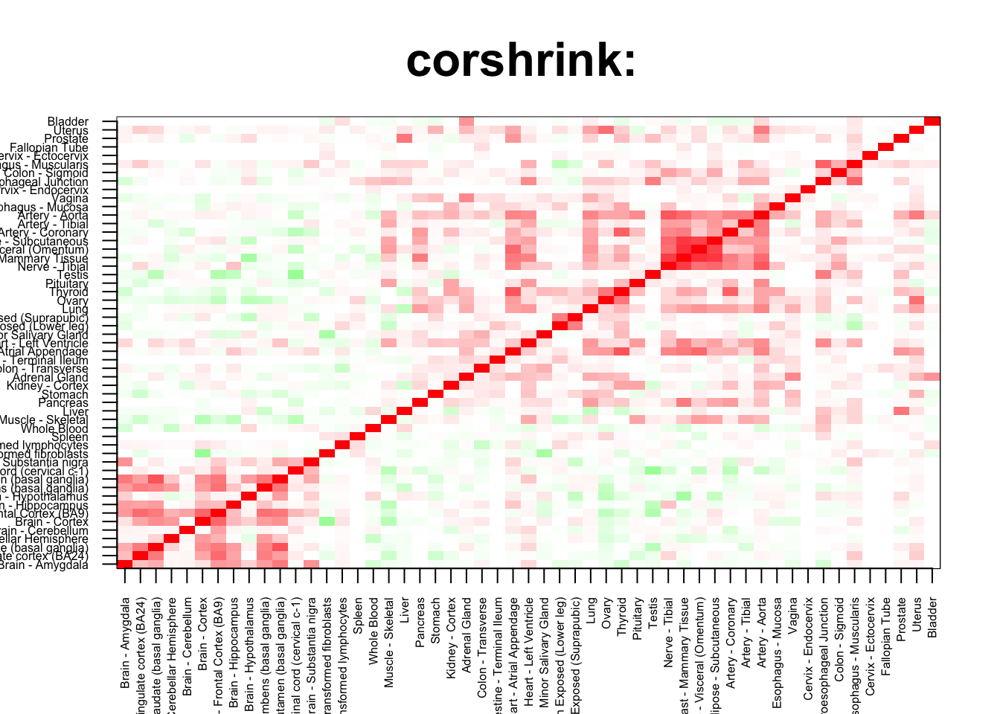
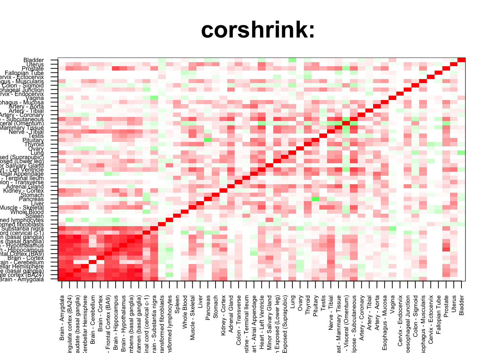

rm(list=ls())
corshrink_data <- get(load("../output/ash_cor_only_voom_pearson_normal_gtex_tissues.rda"))
cor_data <- get(load("../output/cor_tissues_non_ash_voom_pearson.rda"))common_samples <- get(load("../output/common_samples.rda"))
tissue_labels <- read.table(file = "../data/GTEX_V6/samples_id.txt")[,3]
#library(data.table)
#data <- data.frame(fread("../data/GTEX_V6/cis_gene_expression.txt"))
#matdata <- t(data[,-c(1,2)])
gene_names <- as.character(read.table(file = "../data/GTEX_V6/gene_names_GTEX_V6.txt")[,1])
gene_names_1 <- as.character(sapply(gene_names, function(x) return(strsplit(x, "[.]")[[1]][1])))
U <- unique(tissue_labels)tab <- array(0, dim(corshrink_data)[3])
breast_adipose_set <- match(c("Adipose - Subcutaneous", "Adipose - Visceral (Omentum)",
"Breast - Mammary Tissue"), U)
for(m in 1:dim(corshrink_data)[3]){
temp <- corshrink_data[breast_adipose_set, breast_adipose_set, m]
temp1 <- corshrink_data[order_index[-(1:13)], order_index[-(1:13)],m]
tab[m] <- median(temp[row(temp) > col(temp)]) - median(temp1[row(temp1) > col(temp1)])
}
ordering_high <- order(tab, decreasing = TRUE)[1:100]
ordering_low <- order(tab, decreasing = FALSE)[1:100]top_gene <- gene_names_1[ordering_high[1]]
col=c(rev(rgb(seq(1,0,length=1000),1,seq(1,0,length=1000))),
rgb(1,seq(1,0,length=1000),seq(1,0,length=1000)))
image(as.matrix(corshrink_data[order_index,order_index, ordering_high[1]]),
col=col, main=paste0("corshrink: "), cex.main=2,
xaxt = "n", yaxt = "n", zlim=c(-1,1))
axis(1, at = seq(0, 1, length.out = 53), labels = U[order_index], las=2, cex.axis = 0.5)
axis(2, at = seq(0, 1, length.out = 53), labels = U[order_index], las=2, cex.axis = 0.5)
bottom_gene <- gene_names_1[ordering_low[1]]
col=c(rev(rgb(seq(1,0,length=1000),1,seq(1,0,length=1000))),
rgb(1,seq(1,0,length=1000),seq(1,0,length=1000)))
image(as.matrix(corshrink_data[order_index,order_index, ordering_low[1]]),
col=col, main=paste0("corshrink: "), cex.main=2,
xaxt = "n", yaxt = "n", zlim=c(-1,1))
axis(1, at = seq(0, 1, length.out = 53), labels = U[order_index], las=2, cex.axis = 0.5)
axis(2, at = seq(0, 1, length.out = 53), labels = U[order_index], las=2, cex.axis = 0.5)
high_breast_adipose_genes <- gene_names_1[ordering_high]
low_breast_adipose_genes <- gene_names_1[ordering_low]
write.table(cbind.data.frame(high_breast_adipose_genes), quote = FALSE, file = "../utilities/breast_adipose/high_breast_adipose.txt", row.names = FALSE, col.names = FALSE)
write.table(cbind.data.frame(low_breast_adipose_genes), quote = FALSE, file = "../utilities/breast_adipose/low_breast_adipose.txt", row.names = FALSE, col.names = FALSE)tab <- read.delim("../utilities/breast_adipose/pathway_high.tab")
head(cbind.data.frame(tab$pathway, tab$q.value), 100)## tab$pathway
## 1 Triglyceride Biosynthesis
## 2 Fatty acid, triacylglycerol, and ketone body metabolism
## 3 Synthesis of PE
## 4 Fatty Acyl-CoA Biosynthesis
## 5 Transcription factor regulation in adipogenesis
## 6 Pink/Parkin Mediated Mitophagy
## 7 Mitophagy
## 8 Biosynthesis of unsaturated fatty acids - Homo sapiens (human)
## 9 Antigen processing and presentation - Homo sapiens (human)
## 10 Antigen Presentation: Folding, assembly and peptide loading of class I MHC
## 11 Fatty acid elongation - Homo sapiens (human)
## 12 Downregulation of TGF-beta receptor signaling
## 13 Synthesis of very long-chain fatty acyl-CoAs
## tab$q.value
## 1 0.08308783
## 2 0.08308783
## 3 0.09652848
## 4 0.09652848
## 5 0.10054491
## 6 0.10054491
## 7 0.10054491
## 8 0.10054491
## 9 0.10054491
## 10 0.10054491
## 11 0.10054491
## 12 0.10054491
## 13 0.10054491tab <- read.delim("../utilities/breast_adipose/GO_high.tab")
head(cbind.data.frame(tab$term_name, tab$q.value), 100)## tab$term_name
## 1 cellular carbohydrate biosynthetic process
## 2 cellular polysaccharide metabolic process
## 3 vesicle docking
## 4 polysaccharide metabolic process
## 5 cellular polysaccharide biosynthetic process
## 6 membrane docking
## 7 polysaccharide biosynthetic process
## 8 glycogen metabolic process
## 9 cellular glucan metabolic process
## 10 glucan metabolic process
## 11 cytoplasmic part
## 12 mitochondrial calcium ion transport
## 13 energy reserve metabolic process
## 14 apoptotic process
## 15 cytoplasm
## 16 programmed cell death
## 17 antigen processing and presentation of endogenous peptide antigen via MHC class I
## 18 cellular carbohydrate metabolic process
## 19 single-organism cellular process
## 20 antigen processing and presentation of endogenous peptide antigen
## 21 glycogen biosynthetic process
## 22 vesicle
## 23 cell death
## 24 carbohydrate biosynthetic process
## 25 thioester biosynthetic process
## 26 antigen processing and presentation of endogenous antigen
## 27 spindle
## 28 integral component of endoplasmic reticulum membrane
## 29 sulfur compound biosynthetic process
## 30 regulation of Wnt signaling pathway
## 31 intrinsic component of endoplasmic reticulum membrane
## 32 cyclase activity
## 33 endoplasmic reticulum part
## 34 positive regulation of protein binding
## 35 endomembrane system
## 36 establishment of localization
## 37 regulation of necrotic cell death
## 38 endoplasmic reticulum
## 39 transport
## 40 positive regulation of cell communication
## 41 positive regulation of signaling
## 42 mitochondrial outer membrane
## tab$q.value
## 1 0.01445951
## 2 0.01920296
## 3 0.01920296
## 4 0.02007949
## 5 0.02127896
## 6 0.08672814
## 7 0.05677867
## 8 0.03950204
## 9 0.05677867
## 10 0.05677867
## 11 0.04392752
## 12 0.05822860
## 13 0.05783708
## 14 0.05822860
## 15 0.04392752
## 16 0.06132995
## 17 0.06901134
## 18 0.17285108
## 19 0.15265463
## 20 0.07703467
## 21 0.06901134
## 22 0.05482983
## 23 0.17285108
## 24 0.09035337
## 25 0.09035337
## 26 0.17285108
## 27 0.09928257
## 28 0.09928257
## 29 0.10728869
## 30 0.11663066
## 31 0.05921749
## 32 0.14955745
## 33 0.05921749
## 34 0.13043984
## 35 0.10219386
## 36 0.24553359
## 37 0.14229770
## 38 0.09928257
## 39 0.25347218
## 40 0.15795592
## 41 0.19891148
## 42 0.09928257tab <- read.delim("../utilities/breast_adipose/pathway_low.tab")
head(cbind.data.frame(tab$pathway, tab$q.value), 100)## tab$pathway
## 1 Photodynamic therapy-induced NF-kB survival signaling
## 2 TNF signaling pathway - Homo sapiens (human)
## 3 Legionellosis - Homo sapiens (human)
## 4 NF-kappa B signaling pathway - Homo sapiens (human)
## 5 Pertussis - Homo sapiens (human)
## 6 Spinal Cord Injury
## 7 Influenza A - Homo sapiens (human)
## 8 VEGFA-VEGFR2 Signaling Pathway
## 9 Validated transcriptional targets of AP1 family members Fra1 and Fra2
## 10 NOD-like receptor signaling pathway - Homo sapiens (human)
## 11 Selenium Micronutrient Network
## 12 Vitamin B12 Metabolism
## 13 Lung fibrosis
## 14 Folate Metabolism
## 15 Glucocorticoid receptor regulatory network
## 16 Cytokine-cytokine receptor interaction - Homo sapiens (human)
## 17 Malaria - Homo sapiens (human)
## 18 IL1 and megakaryocytes in obesity
## 19 Senescence and Autophagy in Cancer
## 20 IL23-mediated signaling events
## 21 Type II interferon signaling (IFNG)
## 22 Hepatitis C - Homo sapiens (human)
## 23 Salmonella infection - Homo sapiens (human)
## 24 Direct p53 effectors
## 25 Rheumatoid arthritis - Homo sapiens (human)
## 26 IL6-mediated signaling events
## 27 Immune System
## 28 Hepatitis C and Hepatocellular Carcinoma
## 29 Photodynamic therapy-induced AP-1 survival signaling.
## 30 AGE-RAGE signaling pathway in diabetic complications - Homo sapiens (human)
## 31 Overview of nanoparticle effects
## 32 Toll-like Receptor Signaling Pathway
## 33 Apoptosis-related network due to altered Notch3 in ovarian cancer
## 34 Chagas disease (American trypanosomiasis) - Homo sapiens (human)
## 35 Transcriptional misregulation in cancer - Homo sapiens (human)
## 36 ATF-2 transcription factor network
## 37 Cytokines and Inflammatory Response
## 38 Innate Immune System
## 39 Interleukin-6 family signaling
## 40 AP-1 transcription factor network
## 41 Senescence-Associated Secretory Phenotype (SASP)
## 42 Beta2 integrin cell surface interactions
## 43 amb2 Integrin signaling
## 44 Regulation of toll-like receptor signaling pathway
## 45 Interleukin-1 processing
## 46 ATF4 activates genes
## 47 Attachment of GPI anchor to uPAR
## 48 African trypanosomiasis - Homo sapiens (human)
## 49 Aldosterone synthesis and secretion - Homo sapiens (human)
## 50 Non-alcoholic fatty liver disease (NAFLD) - Homo sapiens (human)
## 51 Photodynamic therapy-induced HIF-1 survival signaling
## 52 Jak-STAT signaling pathway - Homo sapiens (human)
## 53 Sudden Infant Death Syndrome (SIDS) Susceptibility Pathways
## 54 Apoptosis Modulation and Signaling
## 55 Apoptosis Modulation and Signaling
## 56 Apoptosis Modulation and Signaling
## 57 TNF related weak inducer of apoptosis (TWEAK) Signaling Pathway
## 58 Nucleotide-binding Oligomerization Domain (NOD) pathway
## 59 HTLV-I infection - Homo sapiens (human)
## 60 Amoebiasis - Homo sapiens (human)
## 61 JAK STAT MolecularVariation 1
## 62 IL-6 signaling pathway
## 63 Interleukin-6 signaling
## 64 Toll-like receptor signaling pathway - Homo sapiens (human)
## 65 Thymic Stromal LymphoPoietin (TSLP) Signaling Pathway
## 66 Herpes simplex infection - Homo sapiens (human)
## 67 NHR
## 68 DNA Damage Response (only ATM dependent)
## 69 Chemokine receptors bind chemokines
## 70 Nuclear Receptor transcription pathway
## 71 Dissolution of Fibrin Clot
## 72 Complement and Coagulation Cascades
## 73 Dengue-2 Interactions with Complement and Coagulation Cascades
## 74 Adipogenesis
## 75 Beta5 beta6 beta7 and beta8 integrin cell surface interactions
## 76 Measles - Homo sapiens (human)
## 77 Oncostatin M Signaling Pathway
## 78 Glucocorticoid Receptor Pathway
## 79 Hepatitis B - Homo sapiens (human)
## 80 RIP-mediated NFkB activation via ZBP1
## 81 E2F transcription factor network
## 82 EBV LMP1 signaling
## 83 Complement and coagulation cascades - Homo sapiens (human)
## 84 GPCR signaling-G alpha i
## 85 GPCR signaling-pertussis toxin
## 86 Constitutive Signaling by AKT1 E17K in Cancer
## 87 ZBP1(DAI) mediated induction of type I IFNs
## 88 Protein processing in endoplasmic reticulum - Homo sapiens (human)
## 89 IL27-mediated signaling events
## 90 C-type lectin receptors (CLRs)
## 91 GPCR signaling-cholera toxin
## 92 GPCR signaling-G alpha s Epac and ERK
## 93 Photodynamic therapy-induced unfolded protein response
## 94 GPCR signaling-G alpha q
## 95 Pathways in cancer - Homo sapiens (human)
## 96 T-Cell antigen Receptor (TCR) Signaling Pathway
## 97 Corticotropin-releasing hormone signaling pathway
## 98 GPCR signaling-G alpha s PKA and ERK
## 99 nfkb activation by nontypeable hemophilus influenzae
## 100 TNF alpha Signaling Pathway
## tab$q.value
## 1 3.089291e-10
## 2 3.099683e-09
## 3 4.996518e-09
## 4 9.476139e-09
## 5 4.340398e-08
## 6 5.025804e-08
## 7 8.792439e-08
## 8 9.674219e-08
## 9 2.870150e-07
## 10 7.719807e-07
## 11 1.150632e-06
## 12 1.346641e-06
## 13 4.962533e-06
## 14 5.548467e-06
## 15 1.762436e-05
## 16 2.134943e-05
## 17 2.636620e-05
## 18 3.833630e-05
## 19 6.386103e-05
## 20 1.960923e-04
## 21 1.960923e-04
## 22 2.147008e-04
## 23 2.968075e-04
## 24 2.968075e-04
## 25 3.434488e-04
## 26 4.145647e-04
## 27 4.507033e-04
## 28 4.544270e-04
## 29 4.754213e-04
## 30 5.159153e-04
## 31 5.159153e-04
## 32 5.165385e-04
## 33 5.262649e-04
## 34 5.333483e-04
## 35 7.123952e-04
## 36 8.384978e-04
## 37 1.135780e-03
## 38 1.156676e-03
## 39 1.208608e-03
## 40 1.361874e-03
## 41 1.538723e-03
## 42 1.543856e-03
## 43 1.664538e-03
## 44 1.837435e-03
## 45 1.874110e-03
## 46 1.874110e-03
## 47 1.874110e-03
## 48 1.933735e-03
## 49 1.933735e-03
## 50 2.077159e-03
## 51 2.196215e-03
## 52 2.457262e-03
## 53 2.481257e-03
## 54 2.620059e-03
## 55 2.620059e-03
## 56 2.620059e-03
## 57 2.840503e-03
## 58 2.840503e-03
## 59 2.985483e-03
## 60 2.985483e-03
## 61 3.051977e-03
## 62 3.057973e-03
## 63 3.622275e-03
## 64 3.766441e-03
## 65 3.787030e-03
## 66 3.946695e-03
## 67 4.149689e-03
## 68 4.215118e-03
## 69 4.273850e-03
## 70 4.462779e-03
## 71 4.533571e-03
## 72 6.613709e-03
## 73 6.846032e-03
## 74 7.364022e-03
## 75 7.402453e-03
## 76 7.998096e-03
## 77 8.162357e-03
## 78 9.949026e-03
## 79 1.020699e-02
## 80 1.060050e-02
## 81 1.208657e-02
## 82 1.239240e-02
## 83 1.315073e-02
## 84 1.377539e-02
## 85 1.377539e-02
## 86 1.377539e-02
## 87 1.377539e-02
## 88 1.416017e-02
## 89 1.454863e-02
## 90 1.472069e-02
## 91 1.472069e-02
## 92 1.499617e-02
## 93 1.499617e-02
## 94 1.515326e-02
## 95 1.623219e-02
## 96 1.634929e-02
## 97 1.711429e-02
## 98 1.711429e-02
## 99 1.718341e-02
## 100 1.718341e-02tab <- read.delim("../utilities/breast_adipose/GO_low.tab")
head(cbind.data.frame(tab$term_name, tab$q.value), 100)## tab$term_name
## 1 response to molecule of bacterial origin
## 2 response to lipopolysaccharide
## 3 response to bacterium
## 4 inflammatory response
## 5 response to lipid
## 6 response to external stimulus
## 7 negative regulation of biological process
## 8 response to external biotic stimulus
## 9 response to other organism
## 10 cellular response to molecule of bacterial origin
## 11 response to biotic stimulus
## 12 negative regulation of cell death
## 13 response to oxygen-containing compound
## 14 cellular response to biotic stimulus
## 15 response to stress
## 16 response to organic substance
## 17 negative regulation of cellular process
## 18 regulation of cell death
## 19 cell death
## 20 apoptotic process
## 21 regulation of programmed cell death
## 22 programmed cell death
## 23 cellular response to oxygen-containing compound
## 24 cellular response to lipid
## 25 defense response
## 26 positive regulation of cytokine production
## 27 regulation of cytokine production
## 28 negative regulation of response to stimulus
## 29 response to chemical
## 30 response to oxygen levels
## 31 positive regulation of cellular component movement
## 32 angiogenesis
## 33 immune response
## 34 regulation of response to external stimulus
## 35 positive regulation of cell death
## 36 positive regulation of locomotion
## 37 positive regulation of leukocyte migration
## 38 cytokine production
## 39 leukocyte activation
## 40 anatomical structure formation involved in morphogenesis
## 41 regulation of cell adhesion
## 42 regulation of response to stress
## 43 response to extracellular stimulus
## 44 regulation of inflammatory response
## 45 positive regulation of cellular process
## 46 response to decreased oxygen levels
## 47 cell activation
## 48 cellular response to stress
## 49 apoptotic signaling pathway
## 50 blood vessel development
## 51 positive regulation of biosynthetic process
## 52 response to cytokine
## 53 response to nitrogen compound
## 54 blood vessel morphogenesis
## 55 regulation of response to stimulus
## 56 positive regulation of NF-kappaB transcription factor activity
## 57 vasculature development
## 58 cardiovascular system development
## 59 positive regulation of cellular metabolic process
## 60 negative regulation of cell communication
## 61 negative regulation of signaling
## 62 positive regulation of immune system process
## 63 cellular response to chemical stimulus
## 64 positive regulation of metabolic process
## 65 response to nutrient levels
## 66 regulation of protein metabolic process
## 67 regulation of cellular protein metabolic process
## 68 negative regulation of multicellular organismal process
## 69 regulation of leukocyte migration
## 70 regulation of reactive oxygen species metabolic process
## 71 regulation of leukocyte activation
## 72 regulation of angiogenesis
## 73 positive regulation of nitrogen compound metabolic process
## 74 positive regulation of biological process
## 75 regulation of neutrophil migration
## 76 nitric oxide biosynthetic process
## 77 response to hypoxia
## 78 regulation of reactive oxygen species biosynthetic process
## 79 regulation of immune system process
## 80 reactive oxygen species metabolic process
## 81 nitric oxide metabolic process
## 82 positive regulation of leukocyte activation
## 83 regulation of cell activation
## 84 intracellular signal transduction
## 85 anatomical structure development
## 86 regulation of vasculature development
## 87 multicellular organism development
## 88 positive regulation of cell activation
## 89 regulation of molecular function
## 90 negative regulation of macromolecule metabolic process
## 91 response to organic cyclic compound
## 92 reactive nitrogen species metabolic process
## 93 negative regulation of cellular metabolic process
## 94 positive regulation of response to stimulus
## 95 negative regulation of signal transduction
## 96 regulation of signal transduction
## 97 cellular response to organic substance
## 98 system development
## 99 anatomical structure morphogenesis
## 100 single-multicellular organism process
## tab$q.value
## 1 8.413515e-14
## 2 4.150473e-13
## 3 2.158988e-11
## 4 1.583668e-11
## 5 8.060828e-11
## 6 2.245748e-10
## 7 1.050138e-09
## 8 1.242491e-09
## 9 8.154797e-10
## 10 1.273221e-09
## 11 7.452476e-10
## 12 5.533195e-09
## 13 3.307003e-09
## 14 3.598892e-09
## 15 2.426480e-09
## 16 6.915446e-09
## 17 1.244761e-08
## 18 1.244761e-08
## 19 1.144015e-08
## 20 3.565023e-08
## 21 3.565023e-08
## 22 2.046843e-08
## 23 2.157222e-08
## 24 3.923396e-08
## 25 2.379672e-08
## 26 6.623721e-08
## 27 5.929698e-08
## 28 6.162418e-08
## 29 3.437295e-08
## 30 7.585993e-08
## 31 1.404876e-07
## 32 9.061782e-08
## 33 4.936378e-08
## 34 1.157641e-07
## 35 1.790843e-07
## 36 1.420361e-07
## 37 2.158552e-07
## 38 1.554398e-07
## 39 7.072097e-08
## 40 7.072097e-08
## 41 1.711559e-07
## 42 2.388034e-07
## 43 2.195338e-07
## 44 3.622921e-07
## 45 3.424344e-07
## 46 3.712717e-07
## 47 2.863643e-07
## 48 2.863643e-07
## 49 2.863643e-07
## 50 3.125564e-07
## 51 6.037994e-07
## 52 5.062874e-07
## 53 3.400365e-07
## 54 3.400365e-07
## 55 3.614541e-07
## 56 7.788269e-07
## 57 6.731712e-07
## 58 7.385743e-07
## 59 8.939334e-07
## 60 8.939334e-07
## 61 8.069155e-07
## 62 8.385367e-07
## 63 5.830048e-07
## 64 8.385367e-07
## 65 8.759785e-07
## 66 1.221655e-06
## 67 1.387355e-06
## 68 1.338527e-06
## 69 1.374892e-06
## 70 1.655539e-06
## 71 1.434306e-06
## 72 1.655539e-06
## 73 1.655539e-06
## 74 1.283222e-06
## 75 1.984919e-06
## 76 1.974482e-06
## 77 1.540102e-06
## 78 2.248291e-06
## 79 1.660489e-06
## 80 1.749205e-06
## 81 2.504478e-06
## 82 2.588047e-06
## 83 2.734766e-06
## 84 2.078449e-06
## 85 1.917172e-06
## 86 2.999979e-06
## 87 2.100442e-06
## 88 3.004726e-06
## 89 1.917172e-06
## 90 3.045597e-06
## 91 3.179046e-06
## 92 2.313399e-06
## 93 3.610244e-06
## 94 3.945401e-06
## 95 3.810890e-06
## 96 4.314489e-06
## 97 4.314489e-06
## 98 3.209938e-06
## 99 2.806191e-06
## 100 2.806191e-06This R Markdown site was created with workflowr